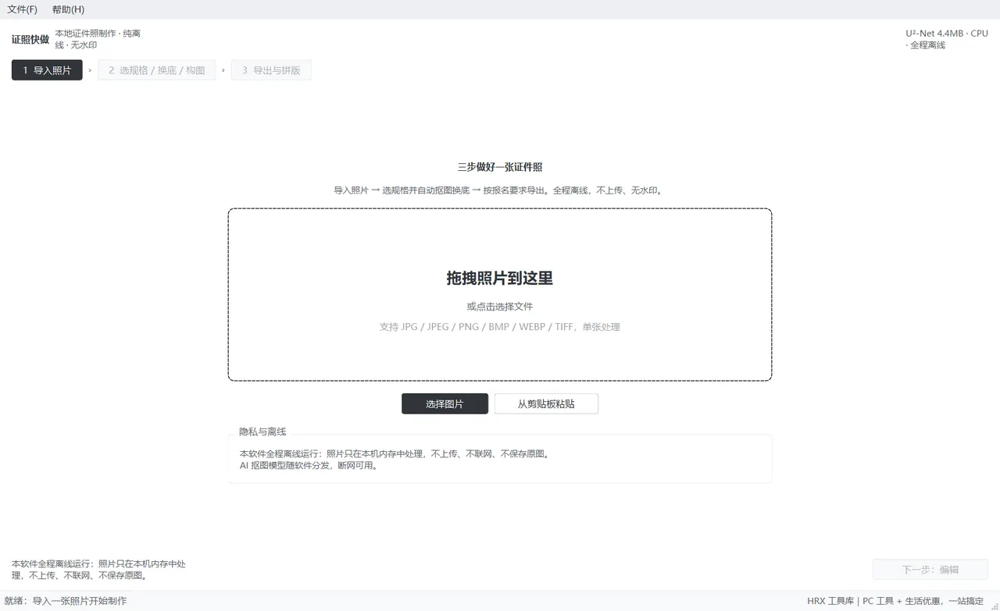

证照快做
IDPhotoKit · 证照快做
证照快做是一款在本地电脑上制作标准证件照的桌面工具。

这是什么
证照快做是一款在本地电脑上制作标准证件照的桌面工具。导入一张生活照，选好规格，软件自动完成抠图、换底和构图，按报名要求导出成品，还能自动拼版直接送印。
软件全程离线运行：照片只在你电脑的内存里处理，不上传、不联网、不保存原图；AI 抠图模型随软件包内置，没有网络也能用。全程无水印、无广告。
下载渠道
下载后解压即用，不需要装运行库；软件全程在本机运行，文件不上传。
怎么用
安装
- 拿到软件压缩包（如
证照快做_v0.1.5.zip）后，右键选择「全部解压」，解压到任意文件夹 - 注意：解压后是一个完整的文件夹（内含主程序和运行组件），整个文件夹要放在一起，不要单独把主程序文件拖出来
启动
- 打开解压出的文件夹，双击其中的
证照快做.exe - 首次运行时，杀毒软件可能弹出提示——这是因为主程序没有数字签名，选择「允许运行」即可
- 启动后看到主界面：
功能详解
三步做出一张证件照
软件按「导入照片 → 选规格、换底、构图 → 导出」三步组织，走完即可出图：
- 在导入页把照片拖进虚线框（或点击【选择图片】）
- 在编辑页确认规格、底色和构图
- 在导出页点【导出】，拿到成品文件
下面按实际使用顺序介绍每个环节。
导入照片
这个功能做什么：把要做证件照的原始照片载入软件。
操作步骤：
- 把照片文件直接拖进导入页的虚线框；或点击【选择图片】从电脑里挑一张
- 照片在聊天工具里时，先复制图片，再点【从剪贴板粘贴】
- 上次用过的照片可在「最近打开」列表里点击快速载入
操作后你会看到：左下角状态栏先显示「已导入 文件名（宽×高px）」，随后软件自动开始 AI 抠图，右侧「抠图」标签显示「AI 推理中，请稍候…」，这段时间底部有进度条、部分按钮是灰的（正常现象，见常见问题）。抠图完成后状态栏提示「抠图完成：…」，并自动跳到第 2 步编辑页。支持 JPG/JPEG/PNG/BMP/WEBP/TIFF 格式，一次处理一张；如果文件格式不支持，状态栏会给出提示。
选择证件照规格
这个功能做什么：决定成品照片的尺寸和要求，软件会按规格自动构图和计算像素。
操作步骤：
- 在编辑页左侧「证件规格」列表中点击需要的规格，如「一寸」「二寸」「身份证」
- 规格较多时，用顶部搜索框输入关键词（如「护照」「国考」），或在「全部分类」下拉框按证件/考试/签证分类筛选
- 点选规格后，下方「规格说明」会显示物理尺寸、成品像素、默认 DPI、常见底色和常见要求
操作后你会看到：画布上的照片立即按新规格重新构图，右侧显示规格详情。常用规格可点击左侧的【+ 自定义规格…】自己添加（见 4.11）。
AI 智能抠图与边缘精修
这个功能做什么：把人像从原背景中分离出来，供后续换底色使用。
操作步骤：
- 导入照片后软件自动抠图（模式为「自动（AI 优先）」）；如果原图背景接近纯色，可在下拉框改用「纯色快速」获得更锐利的边缘
- 效果不满意时，在右侧「边缘精修」区拖动三个滑杆：羽化（柔化边缘）、平滑（消除锯齿）、收缩/扩张（去除图片白边）
- 局部有问题时，点【开启画笔】：工具选「擦除（去背景）」抹掉多余部分，选「恢复（留人物）」补回被误删的头发或肩膀；笔刷大小、硬度、透明度都可调
操作后你会看到：画布实时显示抠图结果。切到「背景」标签选「透明底」可以棋盘格视图检查边缘是否干净。
更换背景颜色
这个功能做什么：给抠好的人像换上报名要求的底色。
操作步骤：
- 在编辑页右侧切到「背景」标签
- 点击标准色块：标准红、纯白、标准蓝、浅蓝、浅灰
- 需要特殊颜色时，点取色器选色，或直接输入十六进制色值
- 勾选「渐变背景（白 → 当前底色）」或「人物底部柔和投影」可制作更立体的展示照——注意多数报名系统只接受纯色背景，正式报名请用纯色
- 需要 PNG 透明底时，点「透明底」色块
操作后你会看到：画布立即换成新底色，底部状态栏显示「背景已更新：××底」。
调整人像构图
这个功能做什么：让人像位置、大小符合规格的人脸占比要求。
操作步骤：
- 一般不用手动调：导入并选规格后，点【自动构图】，软件按人脸位置和规格占比自动对齐
- 需要微调时，在右侧「构图」标签拖动缩放、左右位移、上下位移、旋转滑杆，或直接在画布上拖动人像、滚轮缩放。画布上拖动时，「左右位移」「上下位移」两个滑杆会跟着走，位移各限制在 ±30%，拖到边界会停住
- 头顶留白线、眼平线、下巴线三条辅助线默认开启，对照检查即可；顶部工具栏的「辅助线」开关可控制显隐
- 照片方向不对时，点【↺ 左转 90°】或【↻ 右转 90°】；【⇄ 水平镜像】仅建议非正式用途使用，报名照请用未镜像版本
操作后你会看到：画布跟着刷新，辅助线帮助确认头顶留白和眼位是否达标。
美颜调整
这个功能做什么：对人物区域做轻度修饰，让气色更好且不失真。
操作步骤：
- 切到「美颜」标签，按需拖动磨皮、美白、亮度、对比度四个滑杆
- 拿不准参数时，点【自然档】一键应用参考组合（磨皮 20、美白 10、亮度 5、对比度 0）
- 想看效果差异，按住【按住对比原图】查看原始照片，松开回到效果
- 调过头时点【重置美颜】全部归零
操作后你会看到：画布实时刷新；美颜只作用于检测到的人像区域，背景和衣着不受影响。
导出证件照
这个功能做什么：按报名要求生成最终的图片文件。
操作步骤：
- 点【下一步：导出】进入导出页，右侧「输出尺寸」确认 DPI（默认 300）和格式（报名一般选 JPG；需要透明底选 PNG）。注意：只要选过一次「透明底」，格式会自动切到 PNG，换回红底/白底后格式仍停在 PNG，报名要 JPG 请手动切回来
- 报名系统指定像素时，勾选尺寸输入框并填入宽和高
- 报名系统限制文件大小时，勾选「压缩到目标体积」并填入上限（如 80 KB），软件自动调整压缩质量，必要时轻微降低像素、优先保持清晰度
- 在「文件命名与位置」里可填姓名，命名模板默认为「证件照-{规格}-{底色}」，可用
{姓名}{规格}{底色}{日期}等占位符自定义 - 确认导出目录后点【导出】
操作后你会看到：弹出「导出完成」提示，显示文件位置、尺寸、DPI 和体积；导出前右下方会先给出体积预估，例如「预计 36.2KB（目标 ≤80KB，已达标） · 最终 295×413px · 质量 95」，没达标时同一行会写「未达标，请降低目标或像素」。
一张按本手册制作的成品效果：
照片质量自检
这个功能做什么：导出前对照片做合规参考检查，减少被打回的常见问题。
操作步骤：无需操作，导出页右下方「合规自检」自动显示结果。
操作后你会看到：清晰度、曝光两项的判定（如「清晰度良好（150）」「曝光正常」），以及人脸占比、居中、分辨率提示（如有问题会列出）。注意：自检与规格提示仅供参考，不能保证通过官方审核，请以当次官方公告为准。
拼版打印
这个功能做什么：把成品照自动排满一张相纸，打印裁剪后即得一版证件照。
操作步骤：
- 在导出页点【拼版打印】打开拼版窗口
- 选择纸张（5 寸/6 寸/大 6 寸相纸，A4/A5/A6），软件自动算出最优行列和可放张数
- 按需调整纸张边距、照片间距，勾选「打印裁切线」方便裁剪
- 点【导出 JPG】或【导出 PDF】，把文件发给打印店或自行打印
操作后你会看到：预览区实时显示排版结果，底部标注如「6 寸相纸 · 3 列 × 4 行 = 12 张 · 成品 295×413px」。
实际导出的拼版成品（含裁切线）：
自定义规格
这个功能做什么：内置规格没有覆盖时，自己添加规格并保存为「我的规格」。
操作步骤：
- 在编辑页规格列表下方点【+ 自定义规格…】
- 填写规格名称，选择尺寸单位（毫米或像素），输入宽、高、分辨率
- 按需填写常见底色、人脸高度占比、头顶留白和备注（选填）
- 点【OK】保存
操作后你会看到：新规格出现在规格列表的「我的规格」分组里，下次启动仍可使用。
偏好设置
这个功能做什么：把常用默认值改成你自己的习惯。
操作步骤：
- 点菜单栏【文件】打开设置
- 修改默认导出目录、默认输出 DPI、默认背景色
- 有 NVIDIA 显卡且环境支持时，可勾选「启用 GPU 加速（CUDA）」改用显卡抠图；这台电脑检测不到 CUDA 时该项是灰色不可选，下方会提示「当前环境未检测到 CUDA，AI 抠图将使用 CPU 推理。」
- 点【OK】保存，设置会记住
操作后你会看到：下次导出和新建任务时，默认值已按你的设置生效。
运行环境
| 项目 | 要求 |
|---|---|
| 操作系统 | Windows 10 / 11（64 位） |
| 硬盘空间 | 建议预留 500MB 以上（解压后约 300MB） |
| 网络 | 不需要联网，AI 抠图模型已随软件包内置 |
| 硬件 | 普通家用电脑即可（CPU 抠图）；环境支持 CUDA 时可在设置里改用显卡推理 |
常见问题
- 点【下一步】没反应、按钮灰着，是不是卡住了？
-
原因：不是卡住。导入后软件在本地做 AI 抠图，这段时间（右侧显示「AI 推理中，请稍候…」）为了避免改到一半的参数，第 2/3 步、【下一步】和导出、拼版入口会一起变灰；照片还没导入时，第 2/3 步同样是灰的。
解决：等底部进度条消失、状态栏提示「抠图完成」，入口会自动恢复可点。抠图期间想换底色、调滑杆，等它跑完再操作即可。
- 明明换回了红底，导出的却是 PNG 文件？
-
原因：选过一次「透明底」后，导出格式被自动切到 PNG；换回红底/白底时格式不会自己跳回去。
解决：在导出页「格式」下拉框重新选【JPG（推荐报名）】再导出。
- 抠图后头发边缘有白边或杂色？
-
原因：原图与背景颜色接近时，边缘像素可能残留原背景色。
解决：在「抠图」标签把「收缩/扩张」滑杆向收缩方向微调 1-3px，再适当加大「羽化」；局部问题用【开启画笔】的擦除/恢复工具修补。
- 目标体积压不达标？
-
原因：规格像素较高时，压缩到极小体积（如 20KB 以内）需要明显降低像素，软件会自动权衡。
解决：确认报名系统真实的大小上限（常见为 30-100KB），把目标体积设为该上限；仍不达标时按提示降低「指定像素」后重新导出。
- 双击 exe 没有反应或报缺少组件？
-
原因：主程序依赖同文件夹内的运行组件，单独移动或杀毒软件误删组件会导致启动失败。
解决：重新完整解压压缩包，保持文件夹结构不变，再双击
证照快做.exe；杀毒软件提示时选择允许并添加信任。 - 打印店说照片尺寸不对？
-
原因：打印设置里选择了「适应页面」导致尺寸被缩放。
解决：打印拼版 JPG/PDF 时选择「实际大小/100% 缩放」打印，裁切线按 300DPI 标注。
- 渐变底/投影的照片报名被拒？
-
原因：多数报名系统只接受纯色背景，渐变和投影属于展示用途的效果。
解决：正式报名照在「背景」标签只选标准纯色，不勾选「渐变背景」和「人物底部柔和投影」。
- 想要透明底的照片，选 JPG 导出后背景变黑/变白？
-
原因：JPG 格式不支持透明通道。
解决：在导出页「格式」下拉框选择「PNG（支持透明底）」再导出。
注意事项
- 照片只在本机内存中处理，不写入临时文件、不上传网络；关闭软件后请自行妥善保管原图
- 合规自检与规格说明仅供参考，不保证通过官方审核，报名前请以当次官方公告为准
- 证件照通常要求正面未镜像照，如使用了水平镜像，导出前请确认报名系统是否接受
- 水平翻转、旋转等操作如不满意，重新导入照片即可从头开始，不会影响原图文件
- 软件不提供任何身份、证件伪造功能，仅用于按规格制作个人证件照
其它叫法与搜索词
也有人叫它证件照、报名照、签证照、回执、idphotokit。
英文名 IDPhotoKit，
程序名 证照快做。
想找这类工具时常见的说法：选好规格、软件自动完成抠图、换底和构图、按报名要求导出成品、不上传、不联网、不保存原图、无广告、JPG、PNG、BMP、WEBP。